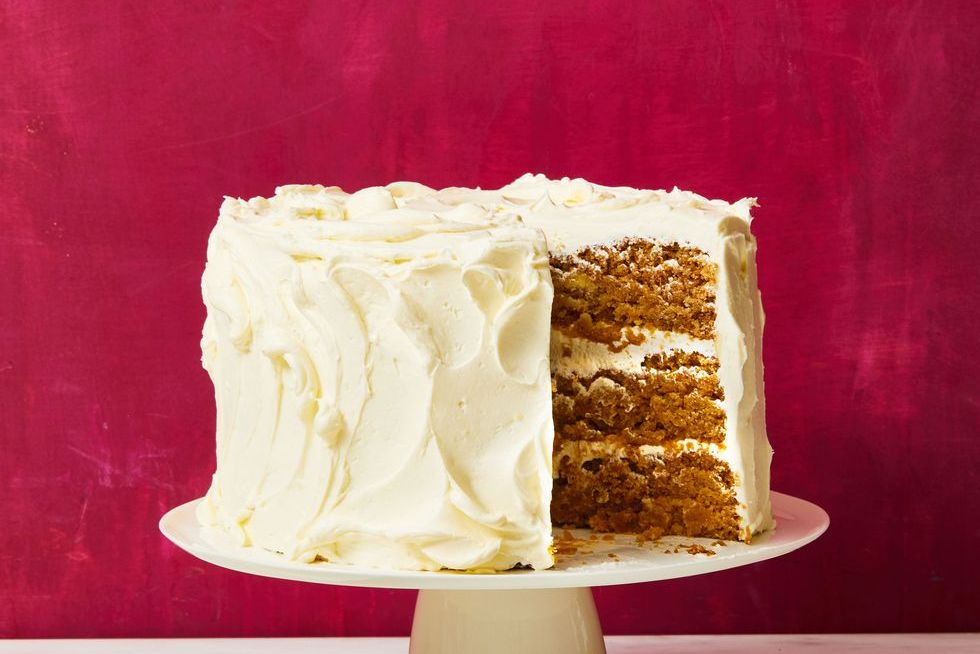

Vegan Apple Cake

Description
Here's a dessert for everyone in your crew, no matter their diet. It's vegan, gluten-free, and totally delicious with warming spices and a fluffy vegan buttercream frosting.
Ingredients
For Cake
- 7 1/2 c. almond flour 1 1/2 c.
- Potato starch 1/2 c.
- Cornstarch 2 c.
- Granulated sugar 3 tsp.
- Ground cinnamon 2 1/4 tsp.
- Baking powder 2 1/4 tsp.
- Baking soda 1 1/2 tsp.
- Ground allspice 1 1/2 tsp.
- Ground ginger 3/4 tsp.
- Ground nutmeg 1/2 tsp.
- Kosher salt 2 1/2 c.
- Oat milk or other nondairy milk 2 1/4 tsp.
- Cider vinegar 3 tbsp.
- Unsulphured molasses 1 1/2 tsp.
- Pure vanilla extract 1/2 c.
- Unsweetened applesauce
For Frosting
- 3 c. apple cider 1 lb.
- Vegan butter 1 lb.
- Confectioners’ sugar, sifted
Steps
-
Prepare cake: Heat oven to 350℉. Lightly coat three 8-inch cake pans with non stick cooking spray. Line bottoms with parchment; spray parchment. In a large bowl, combine almond flour, potato starch, cornstarch, granulated sugar, cinnamon, baking powder, baking soda, allspice, ginger, nutmeg, and salt.
-
In a second bowl, combine oat milk, vinegar, molasses, and vanilla. Fold into flour mixture, then fold in applesauce.
-
Evenly divide batter among prepared pans (about 2 1/3 cups in each pan), spread evenly, and bake until golden brown and toothpick inserted into the center comes out clean, 30 to 35 minutes. Let cakes cool completely in pans.
-
Meanwhile prepare frosting: In a small saucepan, simmer apple cider until reduced to about 2 tablespoons, 30 to 35 minutes. Let cool. While cider syrup is cooling, remove vegan butter from refrigerator and let sit at room temperature for 20 minutes but do not allow to get too soft (return to the refrigerator briefly if this happens).
-
Using an electric mixer on medium speed, beat vegan butter, confectioners’ sugar, and reduced cider until smooth and fluffy, about 4 minutes. Makes about 4 1/2 cups frosting. (If it is too soft, return to the refrigerator to firm up.)
-
Place one cake layer, bottom side up, on serving plate and spread heaping 1/2 cup frosting evenly over top. Top with another cake, bottom side up; repeat. Spread remaining frosting over top and sides of cake.